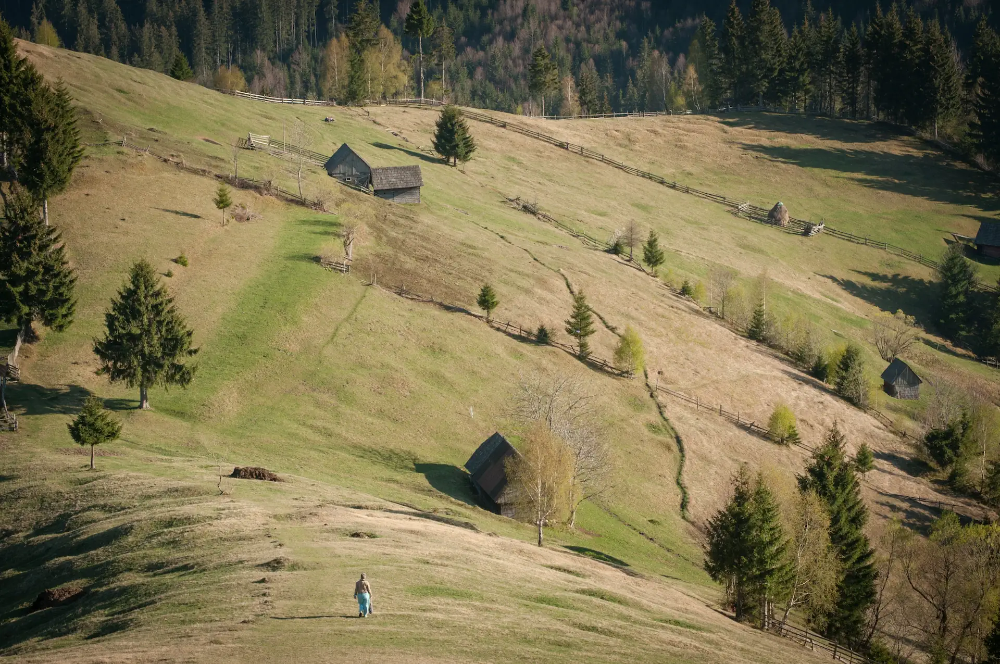
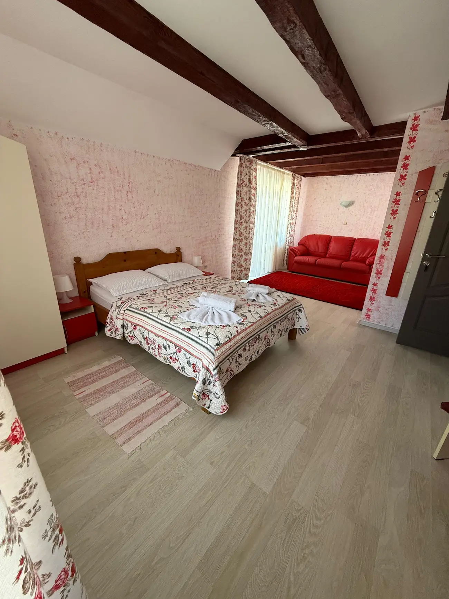
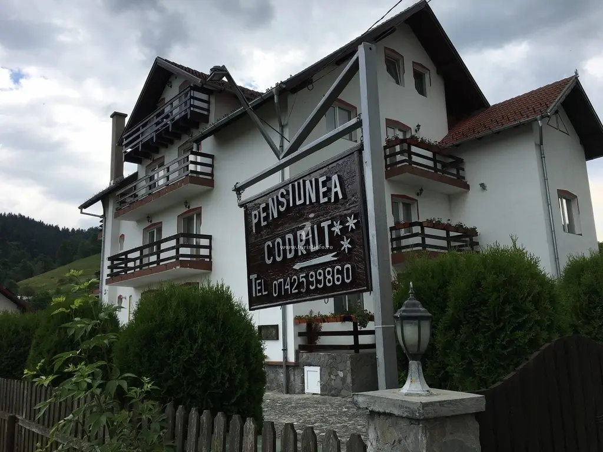

Cazare în Moieciu de Jos.
Loc pentru ai tăi.
O cameră pentru doi, un sejur cu familia sau toate cele 11 camere pentru grupul tău. Curte, ciubăr și muntele aproape.
Moieciu de Jos · zona Bran–Moieciu
Vezi recenziile oaspeților pe GoogleAlege cum vrei să stai.
Camere pentru cupluri și familii. Pensiunea întreagă pentru grupul vostru.

Camera family
Pat dublu, canapea extensibilă, balcon și baie proprie.
2 adulți + 2 copii
De la320 lei/ cameră / noapte
Întreabă pe WhatsApp
Închiriere integrală
Toate cele 11 camere și spațiile comune pentru grupul vostru.
22 adulți + 6 copii · Minimum 2 nopți
TarifLa cererepentru perioada aleasă
Întreabă pe WhatsAppTarife de pornire, pe cameră și pe noapte. Disponibilitatea și prețul final se confirmă direct pentru datele tale.
Mai mult decât o cameră.
O pensiune de familie cu loc pentru gătit, joacă și seri împreună. Între ieșirile prin zona Bran–Moieciu, ai curtea și terasa la îndemână.
- Bucătărie comună utilată
- Parcare privată și Wi-Fi
- Curte, grătar și terasă
- Loc de joacă pentru copii
- Biliard, ping-pong, air hockey
- Ciubăr în aer liber
Disponibilitatea și condițiile de folosire a ciubărului se confirmă pentru sejurul tău.

Vezi locul înainte să ajungi.
Fotografii reale de la pensiune. Apasă pentru a le mări.
Prin Moieciu și împrejurimi.
Idei pentru zilele în care ai chef să ieși la plimbare.
Spune-ne când vrei să vii.
Trimite perioada, numărul de adulți și copii și tipul de cazare. Îți confirmăm direct disponibilitatea și tariful final.
Rezervarea se confirmă direct cu pensiunea.